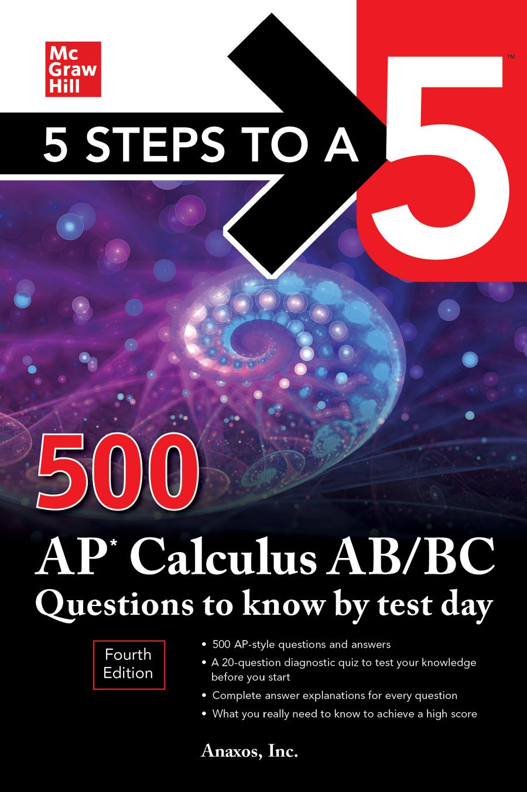
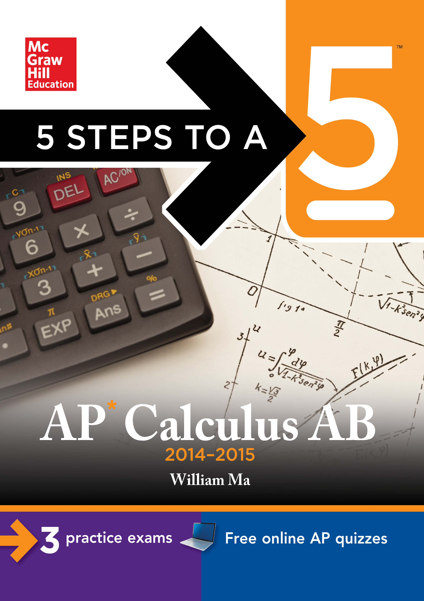
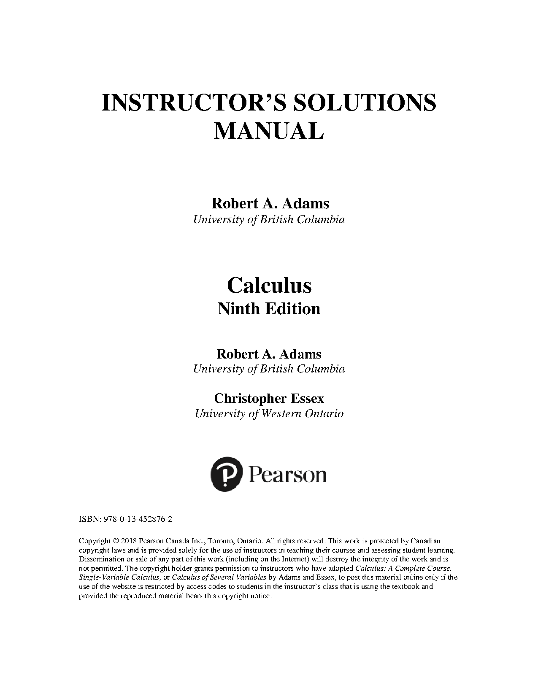

AP Calculus AB & BC
Chương Trình Toán Học Giải Tích Advanced Placement (College Board)
Chào mừng các em học sinh! Khu vực này chứa Sơ đồ kiến thức giải tích chuyên sâu bậc đại học, công thức đạo hàm đạo hàm và tích phân hiển thị bằng LaTeX sắc nét cùng ngân hàng tài liệu luyện viết tự luận FRQ (Free Response Questions) độc quyền giúp đạt điểm tuyệt đối 5/5.
1. Giới Thiệu Chương Trình
Advanced Placement (AP) Calculus là kỳ thi giải tích chuẩn đại học dành cho học sinh trung học phổ thông định hướng du học Mỹ. Chương trình chia làm hai phân hệ:
- Calculus AB: Tương đương với học kỳ giải tích thứ nhất (Calculus I) của đại học. Trọng tâm: Giới hạn (Limits), Đạo hàm (Derivatives) và Tích phân (Integrals) cơ bản.
- Calculus BC: Bao gồm toàn bộ chương trình của AB và bổ sung các phương pháp tích phân nâng cao, phương trình vi phân tham số/cực và chuỗi số vô hạn (Infinite Series).
Cấu Trúc Đề Thi (Assessment Outline)
Đề thi AP Calculus gồm hai phần thi chính trắc nghiệm MCQ (50%) và tự luận FRQ (50%):
| Thành phần thi (Section) | Số lượng câu hỏi | Thời gian làm bài | Chính sách sử dụng máy tính | Trọng số điểm |
|---|---|---|---|---|
| Section I: Multiple Choice (MCQ) | 45 câu trắc nghiệm (chia làm phần Non-calc & Calc) | 1 tiếng 45 phút | Có phần cho phép và không cho phép dùng máy tính đồ họa | 50% |
| Section II: Free Response (FRQ) | 6 câu hỏi tự luận lớn (chia làm phần Non-calc & Calc) | 1 tiếng 30 phút | Có phần cho phép và không cho phép dùng máy tính đồ họa | 50% |
2. Khung Chương Trình Chi Tiết (Syllabus Core)
- Limits and Continuity (Giới hạn & Tính liên tục):
- Định lý kẹp (Squeeze Theorem), giới hạn dạng vô định, quy tắc L’Hopital.
- Differentiation (Đạo hàm và Ứng dụng):
- Đạo hàm hàm ẩn, hàm ngược. Định lý giá trị trung bình (MVT), định lý cực trị (EVT).
- Ứng dụng đạo hàm khảo sát tối ưu hóa cực trị,Related rates.
- Integration (Tích phân và Ứng dụng):
- Tổng Riemann xấp xỉ tích phân. Định lý cơ bản của giải tích (Fundamental Theorem of Calculus).
- Tích phân từng phần, tích phân đổi biến, tích phân phân thức (Partial fractions).
- Ứng dụng tính diện tích, thể tích khối tròn xoay (đĩa, vòng đệm, vỏ trụ), chiều dài cung đường cong.
- Parametric, Polar, and Vector Calculus [BC Extension]:
- Đạo hàm và tích phân của hàm số tham số và tọa độ cực. Tính diện tích đường cực.
- Infinite Sequences and Series [BC Extension]:
- Kiểm định tính hội tụ của chuỗi số (p-series, Ratio test, Integral test).
- Chuỗi lũy thừa, chuỗi Taylor và chuỗi Maclaurin của các hàm số cốt lõi.
3. Ví Dụ Minh Họa & Công Thức Trọng Tâm
Công thức giải tích hiển thị sắc nét bằng LaTeX:
Định lý cơ bản của Giải tích (Fundamental Theorem of Calculus)
Mối liên hệ mật thiết giữa đạo hàm và tích phân xác định của hàm liên tục \(f(x)\) trên \([a, b]\): \[\frac{d}{dx} \int_{a}^{x} f(t) \, dt = f(x)\] \[\int_{a}^{b} f(x) \, dx = F(b) - F(a) \quad \text{với } F'(x) = f(x)\]
Chuỗi khai triển Maclaurin của một số hàm số cốt lõi
Khai triển chuỗi vô hạn tại lân cận \(x=0\): \[e^x = \sum_{n=0}^{\infty} \frac{x^n}{n!} = 1 + x + \frac{x^2}{2!} + \frac{x^3}{3!} + \dots \quad \text{với } x \in \mathbb{R}\] \[\cos x = \sum_{n=0}^{\infty} \frac{(-1)^n x^{2n}}{(2n)!} = 1 - \frac{x^2}{2!} + \frac{x^4}{4!} - \dots \quad \text{với } x \in \mathbb{R}\]
4. Bẫy Điểm Số & Phương Pháp Làm Bài FRQ (FRQ Exam Tips)
- ⚠️ Viết đầy đủ điều kiện áp dụng định lý: Điểm số lập luận FRQ bắt buộc học sinh phải chứng minh điều kiện trước khi viết công thức. Ví dụ: trước khi áp dụng Định lý giá trị trung bình (MVT), bạn bắt buộc phải ghi câu mở đầu: “Since \(f(x)\) is continuous on \([a, b]\) and differentiable on \((a, b)\), then by MVT…”. Thiếu câu này sẽ mất sạch điểm lập luận.
- ⚠️ Nhớ đơn vị đo lường trong bài toán thực tế: Các câu hỏi FRQ liên quan đến Related rates hoặc tích phân dòng chảy thường yêu cầu ghi đơn vị (ví dụ: \(\text{cm}^3/\text{sec}\) hoặc \(\text{gallons}\)). Luôn ghi kèm đơn vị ở đáp số cuối cùng để tránh bị trừ 1 điểm phụ.
- ⚠️ Tuyệt đối không làm tròn số trung gian: Chỉ làm tròn đáp số cuối cùng đến 3 chữ số thập phân (3 decimal places) theo chuẩn College Board. Hãy dùng bộ nhớ máy tính để lưu các giá trị trung gian.
5. Kho Đề FRQ/MCQ Theo Chuyên Đề
Topic 1: Limits & Continuity
- Tính giới hạn dạng vô định, kiểm định tính liên tục tại một điểm và áp dụng quy tắc L’Hopital.
- Tải đề luyện chuyên đề 1 →
Topic 2: Derivatives Applications
- Giải toán Related rates, bài toán cực trị tối ưu hóa kinh tế vật lý và kiểm định định lý MVT/EVT.
- Tải đề luyện chuyên đề 2 →
Topic 3: Integrals & Volume
- Tính tích phân vô định/xác định nâng cao, diện tích hình phẳng và thể tích khối tròn xoay.
- Tải đề luyện chuyên đề 3 →
Topic 4: Infinite Series [BC]
- Luyện giải các bài toán kiểm định tính hội tụ Ratio test, khai triển chuỗi Taylor và sai số Lagrange.
- Tải đề luyện chuyên đề 4 →
6. AP Calculus Books
Access core textbooks, practice books, and test prep materials for the AP Calculus section. Select any book to view or download:

5 Steps to a 5: 500 AP Calculus AB/BC Questions to Know by Test Day (4th Edition)

5 Steps to a 5: 500 AP Calculus AB/BC Questions to Know by Test Day (2014-2015 Edition)
